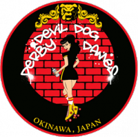

The Tomodachi Cup: Devil Dog Derby Dames of Okinawa
As we've discussed, the second ever international tournament in Japan is coming in March; with the Tomodachi Derby Tournament hosting teams from Japan, the Asia-Pacific region, Alaska and Hawaii.
We're interviewing each of the attending teams in the run up to the tournament itself, and this week we're talking to one of the two leagues from Okinawa itself, Devil Dog Derby Dames (or D4).

Devil Dog Derby Dames' President, Honey Badger, answered some questions for us.
As a member of the organising Japan Derby Tournament Committee, what are you most proud of about the Tomodachi Tournament?
When it comes to assisting with the Tomodachi Tournament, we are most proud of having the opportunity to collaborate with the Leagues and Officials. The collaboration allows the opportunity to communicate and experience different views and perceptions when it comes to the inter workings of establishing and running a Roller Derby Tournament in Japan. Having a role in the Tournament Committee allows us the opportunity to showcase our strengths in our organization off of the track, as well as, learn from our surrounding Japan Roller Derby Leagues and Organizations. In the last tournament, D4 played all of the visiting A teams from outside Japan, and came off worse (although pretty closely against Juneau). What lessons are you taking into the Tomodachi, when facing Fairbanks and Pacific, in particular?
The Japan Open Tournament was a valued learning experience for the Devil Dog Derby Dames. Being on the track with A teams outside of Japan allowed us the opportunity to experience the way Roller Derby is played from different parts of the world. Experiencing the different ways of game play on the track erupted our love and passion for the sport of roller derby; thus fuelling us with motivation to train harder and always push for that 110% , mentally and physically. The lessons that the Devil Dog Derby Dames received from training camps utilizing the knowledge shared from Ninjapan, Vito Ramon, and Carmen Getsome will be applied in every aspect of game play going into the Tomodachi Tournament. Against the other Japanese leagues, D4 have a strong record, and you're the favourite of the three teams competing. How are you feeling about your rematches with Tokyo and Kokeshi?
We are extremely excited and honored to bout both Tokyo and Kokeshi once again. It has been a long time since we have had the opportunity to play against either team. It will feel like a completely new team due to some of us having the high turn over rates from our military affiliations. D4 is confident in our strengths and abilities as a team to perform at our highest level of play when it comes to each of these Bouts. We are humbled with the amount of support in the roller derby community and strive to work hard to earn the support we receive.
Outside of your division, what are you most looking forward to at the Tomodachi?
The Devil Dog Derby Dames are the utmost excited to witness and cheer on all of the teams participating in the Tomodachi Tournament. We can hardly wait to witness the Ninjapan vs Glenmore bouts, due to the extreme talents both teams showcase. We are looking forward to the opportunity for further networking and continuing to build relationships all around the globe for the growth of Roller Derby in general.
What's next for D4, after the Tomodachi?
After the Tomodachi Tournament, D4 is continuing our roller derby endeavours by participating in the 1st Annual Big Island Brawl in June of 2017. The Big Island Brawl is being hosted by Paradise Roller Girls in Hilo, Hawaii. We can hardly anticipate the opportunity to play teams from Hawaii, as well as Colorado and New Zealand, at the tournament.